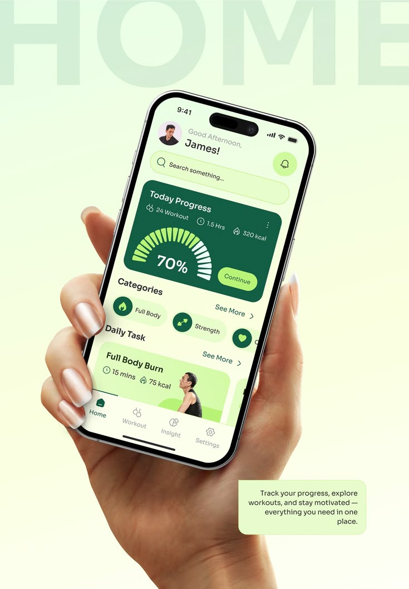
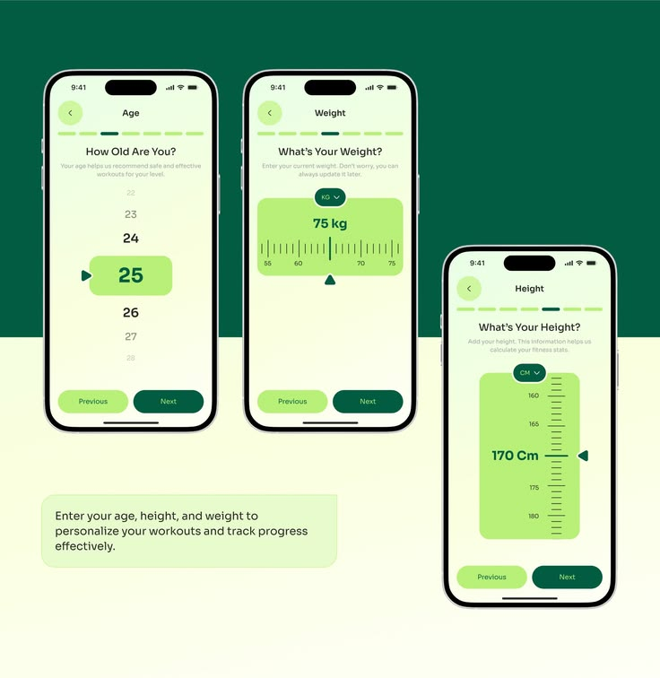
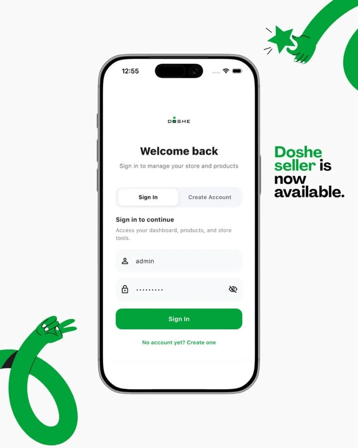
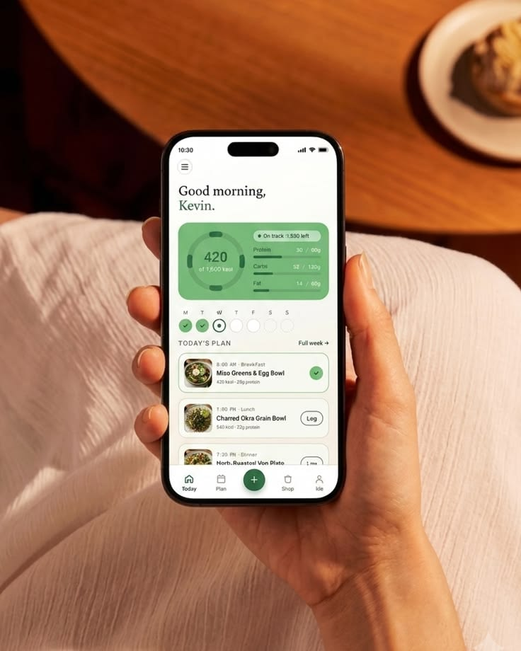
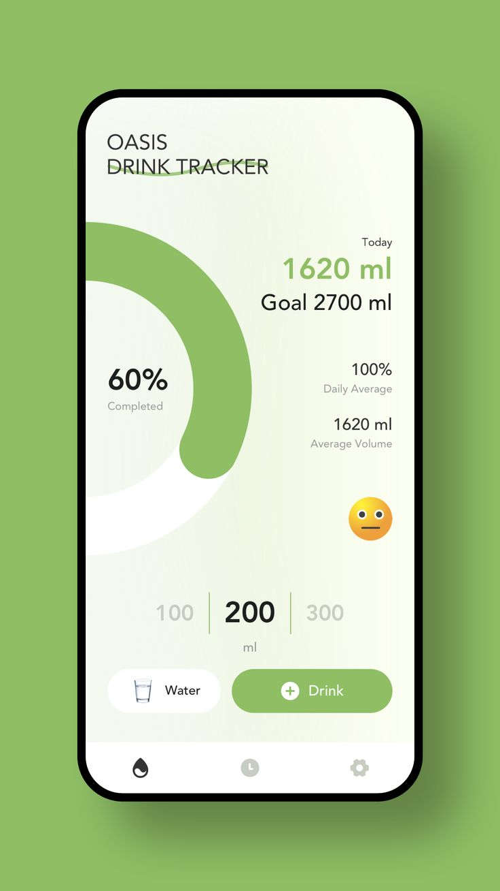

Synk
Entraînement, nutrition, planning et communauté enfin réunis dans une seule intelligence qui s'adapte à ta vie réelle — pour transformer la motivation passagère en discipline durable.

La majorité des personnes qui abandonnent la musculation ou leur rééquilibrage alimentaire ne manquent pas de motivation brute, mais d'un système cohérent.
Le marché du fitness actuel est fragmenté en applications isolées — un outil pour les calories, un pour les séances, un pour l'agenda. Cette dispersion génère une fatigue mentale, un manque de régularité et un taux d'abandon élevé.

Synk réunit l'entraînement, la nutrition, la planification d'agenda et la communauté dans un seul système qui interagit en temps réel. L'application ne subit pas les imprévus de l'utilisateur : elle s'adapte dynamiquement à sa vie réelle.
Dès l'onboarding, l'app apprend qui tu es pour tout personnaliser en conséquence.
Module 01
Synk synchronise tes agendas personnels et professionnels et scanne automatiquement les créneaux libres d'au moins 60 à 90 minutes, trajet compris. Chaque dimanche, un planning hebdomadaire optimal t'attend — ajustable en un simple glisser-déposer.
Time-Blocking Protecteur : un événement factice verrouille ton créneau d'entraînement dans ton agenda, à l'abri des sollicitations externes.
Mar 19h00 · Jeu 07h30 — séances sanctuarisées
Module 02
Un algorithme calcule un score de compatibilité basé sur les disponibilités communes, la parité d'objectifs et le profil comportemental. Les deux utilisateurs signent un Contrat de Constance de 3 semaines — un cycle court et renouvelable pour éviter la lassitude.
Co-op Milestones : à la validation du contrat, un visuel dynamique à partager sur les réseaux sociaux célèbre l'engagement du binôme.

Module 03
Coche les ingrédients disponibles ou prends une photo de ton frigo : l'IA génère instantanément des repas équilibrés, recalculés au gramme près pour combler exactement ton quota de macronutriments restant pour la journée.
SOS Restes anti-gaspi, et un lissage anti-culpabilité qui rééquilibre discrètement les repas suivants après un écart, sans jamais pénaliser.

Module 04
Le coach croise les données de tous les modules : en cas de stagnation détectée sur 3 séances consécutives, il diagnostique la cause — déficit calorique, manque de sommeil, agenda surchargé — et ajuste automatiquement le programme.
« Salut ! J'ai analysé tes performances au squat cette semaine. Tu as stagné, mais tes nuits du jeudi étaient courtes à cause de ton planning. J'ai adapté ta séance de demain pour te laisser récupérer — on va chercher le record la semaine prochaine ! »

Sanctuarise le temps disponible.
Garantit l'engagement à deux.
Identifie les plateaux et la fatigue.
Ajuste la récupération et les repas.
↻ La boucle continue chaque semaine.
L'entraînement s'insère automatiquement dans l'emploi du temps réel de l'utilisateur.
Un engagement humain court encadré par des données objectives de disponibilité.
Des recettes sur mesure générées à partir des ingrédients du frigo, adaptées au gramme près.
Un coach capable de comprendre pourquoi un utilisateur stagne en croisant agenda, alimentation et performances.